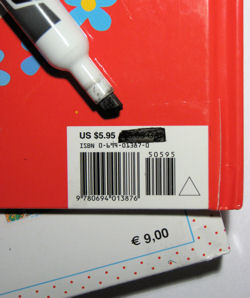

{kind=link}

If you happen to be invited by somebody in Italy, you may wish to bring along a small gift to the host. If the event is a dinner, you should consider a small gift for the host's wife, who'll likely spend the time doing the cooking. Flowers and crafts are always welcome (and neutral) presents. My suggestion is to avoid bringing specialty food from your country (with the exception of alcohol), unless you know your host is an open-minded person. Italy's cuisine is quite good, and you should resist the temptation to bring that Raspberry Honey Mustard Pretzel Dip that you love so much at home... If you visit a family, consider a small present for the kids as well. I've been asked often by my friends in Italy to bring along hats, t-shirts or other apparel with some branding of my city (Seattle), local sport teams, and even Microsoft! Regardless of the present, please make sure to cover or eliminate the sticker price. In Italy, it's against the etiquette of gift giving to clearly showcase how much you spent for the gift. It's likely that your host may offer you some home-made food that is the result of pure labor of love, which is a priceless experience and should be kept as such. Here is a good article with more tips on personal / business gift giving in Italy.